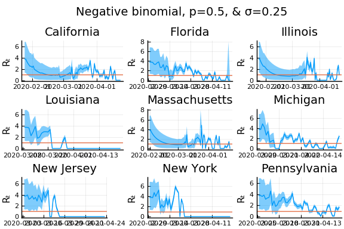
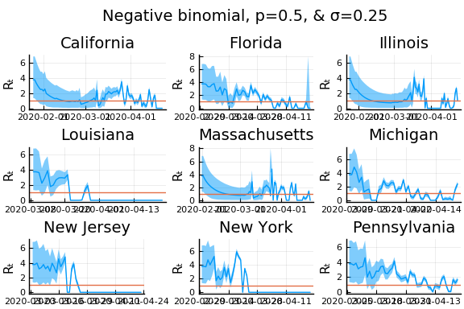
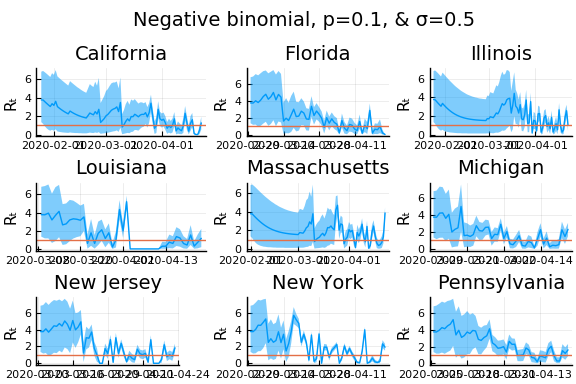
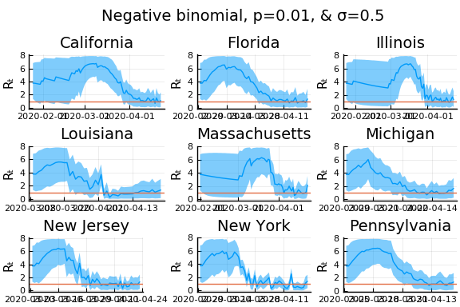
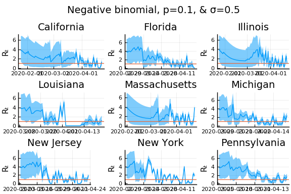
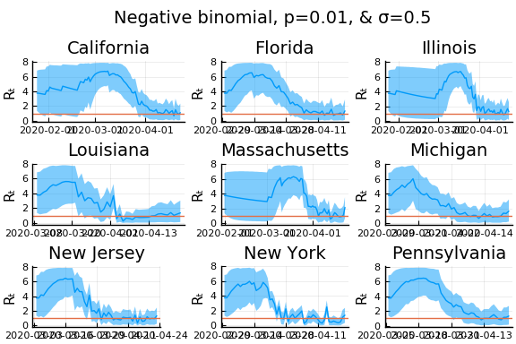

This work is licensed under a Creative Commons Attribution-ShareAlike 4.0 International License
Model¶
Following Kevin Systrom, we adapt the approach of (Bettencourt 2008) to compute real-time rolling estimates of pandemic parameters. (Bettencourt 2008) begin from a SIR model,
To this we add the possibility that not all cases are known. Cases get get detected at rate $I$, so cumulative confirmed cases, $C$, evolves as
Question
Should we add other states to this model? If yes, how? I think using death and hospitalization numbers in estimation makes sense.
The number of new confirmed cases from time $t$ to $t+\delta$ is then:
We will allow for the testing rate, $\tau$, and infection rate, $\beta$, to vary over time.
As in (Bettencourt 2008),
Note
The reproductive number is: $R_t \equiv \frac{S(t)}{N}\frac{\beta(t)}{\gamma}$.
Substituting the expression for $I_t$ into $k_t$, we have
Data¶
We use the same data as the US state model.
The data combines information on
- Daily case counts and deaths from JHU CSSE
- Daily Hospitalizations, recoveries, and testing from the Covid Tracking Project
- Covid related policy changes from Raifman et al
- Movements from Google Mobility Reports
- Hourly workers from Hoembase
Statistical Model¶
The above theoretical model gives a deterministic relationship between $k_t$ and $k_{t-1}$ given the parameters. To bring it to data we must add stochasticity.
Systrom’s approach¶
First we describe what Systrom does. He assumes that $R_{0} \sim Gamma(4,1)$. Then for $t=1, …, T$, he computes $P(R_t|k_{t}, k_{t-1}, … ,k_0)$ iteratively using Bayes’ rules. Specifically, he assumes and that $R_t$ follows a random walk, so the prior of $R_t | R_{t-1}$ is
so that
Note that this computes posteriors of $R_t$ given current and past cases. Future cases are also informative of $R_t$, and you could instead compute $P(R_t | k_0, k_1, …, k_T)$.
The notebook makes some mentions of Gaussian processes. There’s likely some way to recast the random walk assumption as a Gaussian process prior (the kernel would be $\kappa(t,t’) = \min{t,t’} \sigma^2$), but that seems to me like an unusual way to describe it.
Code¶
Let’s see how Systrom’s method works.
First the load data.
using DataFrames, Plots, StatsPlots, CovidSEIR
Plots.pyplot()
df = CovidSEIR.statedata()
df = filter(x->x.fips<60, df)
# focus on 10 states with most cases as of April 1, 2020
sdf = select(df[df[!,:date].==Dates.Date("2020-04-01"),:], :cases, :state) |>
x->sort(x,:cases, rev=true)
states=sdf[1:10,:state]
sdf = select(filter(r->r[:state] ∈ states, df), :cases, :state, :date)
sdf = sort(sdf, [:state, :date])
sdf[!,:newcases] = by(sdf, :state, newcases = :cases => x->(vcat(missing, diff(x))))[!,:newcases]
figs = []
for gdf in groupby(sdf, :state)
@show unique(gdf.state)
f = @df gdf plot(:date, :newcases, legend=:none, linewidth=2, title=unique(gdf.state)[1])
global figs = vcat(figs,f)
end
unique(gdf.state) = ["California"]
unique(gdf.state) = ["Florida"]
unique(gdf.state) = ["Illinois"]
unique(gdf.state) = ["Louisiana"]
unique(gdf.state) = ["Massachusetts"]
unique(gdf.state) = ["Michigan"]
unique(gdf.state) = ["New Jersey"]
unique(gdf.state) = ["New York"]
unique(gdf.state) = ["Pennsylvania"]
unique(gdf.state) = ["Washington"]
display(plot(figs[1:9]..., layout=(3,3)))

From this we can see that new cases are very noisy. This is especially problematic when cases jump from near 0 to very high values, such as in Illinois. The median value of and variance of new cases, $k_t$, are both $k_{t-1} e^{\gamma(R_t - 1)}$. Only huge changes in $R_t$ can rationalize huge jumps in new cases.
Let’s compute posteriors for each state.
using Interpolations, Distributions
function rtpost(cases, γ, σ, prior0, casepdf)
(rgrid, postgrid, ll) = rtpostgrid(cases)(γ, σ, prior0, casepdf)
w = rgrid[2] - rgrid[1]
T = length(cases)
p = [LinearInterpolation(rgrid, postgrid[:,t]) for t in 1:T]
coverage = 0.9
cr = zeros(T,2)
mu = vec(rgrid' * postgrid*w)
for t in 1:T
l = findfirst(cumsum(postgrid[:,t].*w).>(1-coverage)/2)
h = findlast(cumsum(postgrid[:,t].*w).<(1-(1-coverage)/2))
if !(l === nothing || h === nothing)
cr[t,:] = [rgrid[l], rgrid[h]]
end
end
return(p, mu, cr)
end
function rtpostgrid(cases)
# We'll compute the posterior on these values of R_t
rlo = 0
rhi = 8
steps = 500
rgrid = range(rlo, rhi, length=steps)
Δgrid = range(0.05, 0.95, length=10)
w = rgrid[2] - rgrid[1]
dr = rgrid .- rgrid'
fn=function(γ, σ, prior0, casepdf)
prr = pdf.(Normal(0,σ), dr) # P(r_{t+1} | r_t)
for i in 1:size(prr,1)
prr[i, : ] ./= sum(prr[i,:].*w)
end
postgrid = Matrix{typeof(σ)}(undef,length(rgrid), length(cases)) # P(R_t | k_t, k_{t-1},...)
like = similar(postgrid, length(cases))
for t in 1:length(cases)
if (t==1)
postgrid[:,t] .= prior0.(rgrid)
else
if (cases[t-1]===missing || cases[t]===missing)
pkr = 1 # P(k_t | R_t)
else
λ = max(cases[t-1],1).* exp.(γ .* (rgrid .- 1))
#r = λ*nbp/(1-nbp)
#pkr = pdf.(NegativeBinomial.(r,nbp), cases[t])
pkr = casepdf.(λ, cases[t])
if (all(pkr.==0))
@warn "all pkr=0"
@show t, cases[t], cases[t-1]
pkr .= 1
end
end
postgrid[:,t] = pkr.*(prr*postgrid[:,t-1])
like[t] = sum(postgrid[:,t].*w)
postgrid[:,t] ./= max(like[t], 1e-15)
end
end
ll = try
sum(log.(like))
catch
-710*length(like)
end
return((rgrid, postgrid, ll))
end
return(fn)
end
for σ in [0.1, 0.25, 1]
γ =1/7
nbp = 0.01
figs = []
for gdf in groupby(sdf, :state)
p, m, cr = rtpost(gdf.newcases, γ, σ, x->pdf(truncated(Gamma(4,1),0,8), x),
(λ,x)->pdf(Poisson(λ),x))
f = plot(gdf.date, m, ribbon=(m-cr[:,1], cr[:,2] - m), title=unique(gdf.state)[1], legend=:none, ylabel="Rₜ")
f = hline!(f,[1.0])
figs = vcat(figs, f)
end
l = @layout [a{.1h};grid(1,1)]
display(plot(plot(annotation=(0.5,0.5, "Poisson & σ=$σ"), framestyle = :none),
plot(figs[1:9]..., layout=(3,3)), layout=l))
end
(t, cases[t], cases[t - 1]) = (72, 2052, 215)
(t, cases[t], cases[t - 1]) = (77, 9, 1003)
(t, cases[t], cases[t - 1]) = (78, 2807, 9)
(t, cases[t], cases[t - 1]) = (79, 1, 2807)
(t, cases[t], cases[t - 1]) = (80, 2808, 1)
(t, cases[t], cases[t - 1]) = (55, 352, 2)
(t, cases[t], cases[t - 1]) = (54, -39, 74)
(t, cases[t], cases[t - 1]) = (72, 2052, 215)
(t, cases[t], cases[t - 1]) = (77, 9, 1003)
(t, cases[t], cases[t - 1]) = (78, 2807, 9)
(t, cases[t], cases[t - 1]) = (79, 1, 2807)
(t, cases[t], cases[t - 1]) = (80, 2808, 1)
(t, cases[t], cases[t - 1]) = (55, 352, 2)
(t, cases[t], cases[t - 1]) = (54, -39, 74)
(t, cases[t], cases[t - 1]) = (72, 2052, 215)
(t, cases[t], cases[t - 1]) = (77, 9, 1003)
(t, cases[t], cases[t - 1]) = (78, 2807, 9)
(t, cases[t], cases[t - 1]) = (79, 1, 2807)
(t, cases[t], cases[t - 1]) = (80, 2808, 1)
(t, cases[t], cases[t - 1]) = (55, 352, 2)
(t, cases[t], cases[t - 1]) = (54, -39, 74)


In these results, what is happening is that when new cases fluctuate too much, the likelihood is identically 0, causing the posterior calculation to break down. Increasing the variance of changes in $R_t$, widens the posterior confidence intervals, but does not solve the problem of vanishing likelihoods.
One thing that can “solve” the problem is choosing a distribution of $k_t | \lambda, k_{t-1}$ with higher variance. The negative binomial with parameters $\lambda p/(1-p)$ and $p$ has mean $\lambda$ and variance $\lambda/p$.
γ =1/7
σ = 0.25
Plots.closeall()
for σ in [0.1, 0.25, 0.5]
for nbp in [0.5, 0.1, 0.01]
figs = []
for gdf in groupby(sdf, :state)
p, m, cr = rtpost(gdf.newcases, γ, σ, x->pdf(truncated(Gamma(4,1),0,8), x),
(λ,x)->pdf(NegativeBinomial(λ*nbp/(1-nbp), nbp),x));
f = plot(gdf.date, m, ribbon=(m-cr[:,1], cr[:,2] - m), title=unique(gdf.state)[1], legend=:none, ylabel="Rₜ")
f = hline!(f,[1.0])
figs = vcat(figs, f)
end
l = @layout [a{.1h};grid(1,1)]
display(plot(plot(annotation=(0.5,0.5, "Negative binomial, p=$nbp, & σ=$σ"), framestyle = :none),
plot(figs[1:9]..., layout=(3,3)), layout=l, reuse=false))
end
end
(t, cases[t], cases[t - 1]) = (78, 2807, 9)
(t, cases[t], cases[t - 1]) = (79, 1, 2807)
(t, cases[t], cases[t - 1]) = (80, 2808, 1)
(t, cases[t], cases[t - 1]) = (54, -39, 74)
(t, cases[t], cases[t - 1]) = (54, -39, 74)
(t, cases[t], cases[t - 1]) = (54, -39, 74)
(t, cases[t], cases[t - 1]) = (78, 2807, 9)
(t, cases[t], cases[t - 1]) = (79, 1, 2807)
(t, cases[t], cases[t - 1]) = (80, 2808, 1)
(t, cases[t], cases[t - 1]) = (54, -39, 74)
(t, cases[t], cases[t - 1]) = (54, -39, 74)
(t, cases[t], cases[t - 1]) = (54, -39, 74)
(t, cases[t], cases[t - 1]) = (78, 2807, 9)
(t, cases[t], cases[t - 1]) = (79, 1, 2807)
(t, cases[t], cases[t - 1]) = (80, 2808, 1)
(t, cases[t], cases[t - 1]) = (54, -39, 74)
(t, cases[t], cases[t - 1]) = (54, -39, 74)
(t, cases[t], cases[t - 1]) = (54, -39, 74)


 
 

  
 
What Systrom did was smooth the new cases before using the Poisson distribution. He used a window width of $7$ and Gaussian weights with standard deviation $2$.
using RollingFunctions
σ = 0.25
Plots.closeall()
for w in [3, 7, 11]
for s in [0.5, 2, 4]
γ =1/7
nbp = 0.01
figs = []
for gdf in groupby(sdf, :state)
windowsize = w
weights = pdf(Normal(0, s), -floor(windowsize/2):floor(windowsize/2))
weights = weights/sum(weights)
smoothcases = Int.(round.(runmean(gdf.newcases[2:end], windowsize, weights*windowsize)))
p, m, cr = rtpost(smoothcases, γ, σ, x->pdf(truncated(Gamma(4,1),0,8), x),
(λ,x)->pdf(Poisson(λ),x))
f = plot(gdf.date, m, ribbon=(m-cr[:,1], cr[:,2] - m), title=unique(gdf.state)[1], legend=:none, ylabel="Rₜ")
f = hline!(f,[1.0])
figs = vcat(figs, f)
end
l = @layout [a{.1h};grid(1,1)]
display(plot(plot(annotation=(0.5,0.5, "Poisson & σ=$σ, s=$s, w=$w"), framestyle = :none),
plot(figs[1:9]..., layout=(3,3)), layout=l, reuse=false))
end
end
(t, cases[t], cases[t - 1]) = (54, -4, 68)
(t, cases[t], cases[t - 1]) = (56, -4, 68)
(t, cases[t], cases[t - 1]) = (58, -4, 68)


Here we see that we can get a variety of results depending on the smoothing used. All of these posteriors ignore the uncertainty in the choice of smoothing parameters (and procedure).
An alternative approach¶
Here we follow an approach similar in spirit to Systrom, with a few additions. First, we utilize data on movement and business operations as auxillary noisy measures of $R_t$. Second, we allow state policies to shift the mean of $R_t$. Third, we combine data from all states to improve precision in each. Fourth, we incorporate testing numbers into the data.
As above, we assume that
Question
Any distribution with mean $k_{t-1} \frac{\tau{t}}{\tau{t-1}} e^{\gamma(R_t - 1)}$ makes sense here. What other choice could incorporate measurement error so that cases don’t need to be smoothed in advance?
We will allow state policies, $d_{s,t}$ to affect the mean of $R_t$. Specifically, we’ll assume that
Measures of movement and business operations are used as noisy measures of $R_{s,t}$
where $x_{st}$ could include e.g. state demographics and day of week indicators.
Question
Should $x_{st}$ include policies? I think yes.
Question
What to do about $\tau$? One idea is to assume $\frac{\tau_{s,t}}{\tau_{s,t-1}}$ is a function of test numbers. However, numbers of tests are likely responding to policies, $d_{st}$ and cases $k_{st}$.
The parameters $\gamma$, $\alpha$, $\lambda$, $\sigma$, and $\Sigma_m$ are assumed to be common across states.
Code¶
The model
using Turing, CovidSEIR, Plots, PrettyTables, Dates
using LinearAlgebra: dot, diagm, Symmetric, I
@model rt(cases, m, d, x, ::Type{Rtype}=Float64) where {Rtype <: Real} = begin
# Priors
γ ~ truncated(Normal(1/7, 1/2), 1/21, 1/3)
σ ~ truncated(Normal(0.25,1), 1e-6, Inf)
meanR0 ~ truncated(Normal(3, 2), 0, Inf)
sigR0 ~ truncated(Normal(1,1), 1e-2, Inf)
αR ~ truncated(Normal(0.5, 2), -0.9, 0.9)
α ~ MvNormal(zeros(size(d, 1)), 1.0)
λR ~ MvNormal(zeros(size(m, 1)), 1.0)
λ ~ MvNormal(zeros(size(m,1)*size(x,1)), 1.0)
λ = reshape(λ, size(m,1), size(x,1))
J = size(m,1)
#Cm ~ LKJ(J, 2.0)
#m = diagm(ones(J))
sm ~ MvNormal(zeros(J), 1)
Σm = diagm(exp.(sm)) + I*1e-4
#Σm = Cm.*(exp.(sm)*exp.(sm)')
#Σm ~ Wishart(J+2, diagm(ones(J))*1/(2*0.001))
if (cases === missing) # for simulating the model
cases = Matrix{Rtype}(undef, T, S)
end
J, T, S = size(m)
@assert (T,S) == size(cases)
@assert size(x,2) == T && size(d,2) == T
@assert size(x,3) == S && size(d,3) == S
R = Matrix{Rtype}(undef, T, S)
e = Matrix{Rtype}(undef, T, S)
for s in 1:S
R[1,s] = meanR0
e[1,s] ~ Normal(0, sigR0)
for t in 2:T
e[t,s] ~ Normal(αR*e[t-1,s], σ)
R[t,s] = e[t,s] + dot(α, d[:,t,s])
#R[t,s] ~ truncated(Normal(αR*R[t-1,s] + dot(α,d[:,t,s]), σ), 0, 20)
if (t>2) # cases[1,s] is missing because cases is the diff of cumulative cases
meank = max(cases[t-1, s], 1e-1)*exp(γ*(R[t,s]-1))
#@show t, meank, cases[t-1,s], R[t,s], meanR0, sigR0, αR
cases[t, s] ~ Poisson(meank)
#cases[t,s] ~ truncated(Normal(meank, meank), 0, Inf)
end
if !any(ismissing.(m[:,t,s]))
m[:,t,s] ~ MvNormal(λR*R[t,s] + λ*x[:,t,s], Symmetric(Σm))
end
end
end
return(cases, R) # return only matters when simulating model
end
Prepare the data.
df = CovidSEIR.statedata()
df = df[df[!,:fips].<60,:] # get ride of non-states (AS, GU, etc)
df[!, :weekend] = 1*(Dates.dayofweek.(df[!,:date]) .>= 6)
pvars = [Symbol("Stay.at.home..shelter.in.place"),
Symbol("State.of.emergency"),
Symbol("Date.closed.K.12.schools"),
#Symbol("Closed.day.cares"),
#Symbol("Date.banned.visitors.to.nursing.homes"),
Symbol("Closed.non.essential.businesses"),
Symbol("Closed.restaurants.except.take.out")]
dvars= [:weekend]
mvars = [:retail_and_recreation_percent_change_from_baseline,
:grocery_and_pharmacy_percent_change_from_baseline,
#:parks_percent_change_from_baseline,
#:transit_stations_percent_change_from_baseline,
#:workplaces_percent_change_from_baseline,
#:residential_percent_change_from_baseline,
#:percentchangehours,
:percentchangebusinesses]
xvars = dvars
states = unique(df[!,:state])
dates = sort(unique(df[!,:date]))
S = length(states)
T = length(dates)
d = Array{Float64,3}(undef, length(dvars) + length(pvars), T, S)
x = Array{Float64,3}(undef, length(xvars) + length(pvars), T, S)
m = Array{Union{Missing,Float64},3}(missing, length(mvars), T, S)
cc = Matrix{Union{Missing,Float64}}(missing, T,S)
cases = Matrix{Union{Missing,Float64}}(missing, T,S)
for (s, st) in enumerate(states)
for (t, dt) in enumerate(dates)
inc = findall((df[!,:state] .== st) .& (df[!,:date] .==dt))
@assert length(inc)==1
i = inc[1]
p = convert(Array, df[i,pvars]) .< dt
p[ismissing.(p)] .= false
d[:,t,s] .= vcat(p, convert(Array, df[i, dvars]))
x[:,t,s] .= vcat(p, convert(Array, df[i, xvars]))
m[:,t,s] .= convert(Array, df[i, mvars])./100
cc[t,s] = df[i, :cases]
if (t>1)
cases[t,s] = max(0.0,cc[t,s] - cc[t-1,s])
end
end
end
Estimation
mdl = rt(cases, m, d, x)
#@time chain=Turing.sample(mdl, HMC(1e-6, 3), 50);
#using Turing.Variational
#q0 = Variational.meanfield(mdl);
#advi = ADVI(10, 10_000)
#@time q = vi(mdl, ADVI(10,100), q0, optimizer=Variational.DecayedADAGrad(1e-2, 1.1, 0.9));
#chain = Turing.sample(mdl, NUTS(500, 0.65, max_depth=4, init_ϵ=1e-4), 1000)
Bettencourt, Ruy M., Luís M. A. AND Ribeiro. 2008. “Real Time Bayesian Estimation of the Epidemic Potential of Emerging Infectious Diseases.” PLOS ONE 3 (5): 1–9. https://doi.org/10.1371/journal.pone.0002185.